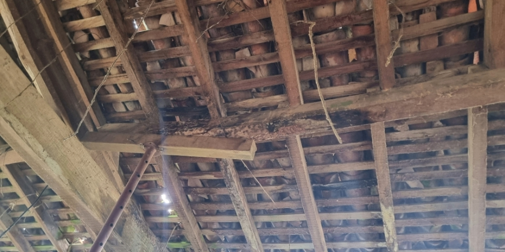
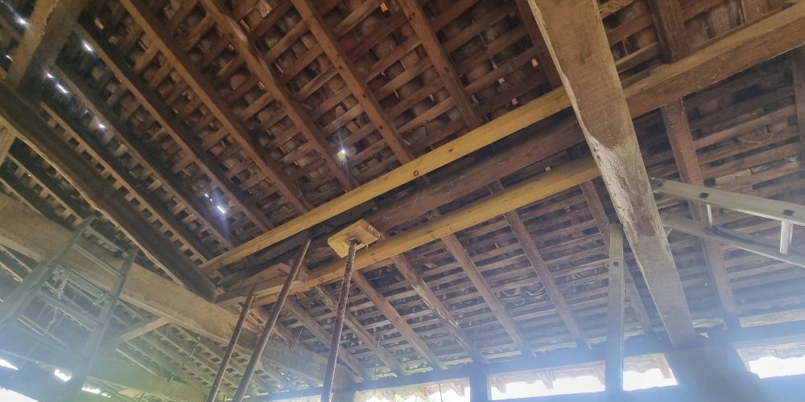

24 avril 2025 – Début du chantier
Renforcement de la toiture avec des bastaings : entre théorie et réalité Pour consolider une poutre fragilisée par l’humidité et les infiltrations, nous avons dû relever la toiture existante à l’aide d’un cric. La poutre d’origine, abîmée par le temps et l’eau, menaçait la stabilité de la structure. Avec mon père, nous avons installé des bastaings pour assurer un bon renfort. On pensait que ce serait simple… mais en réalité, ça nous a pris 3 heures : la mise en pratique s’est révélée bien différente de ce qu’on avait imaginé en théorie !
 